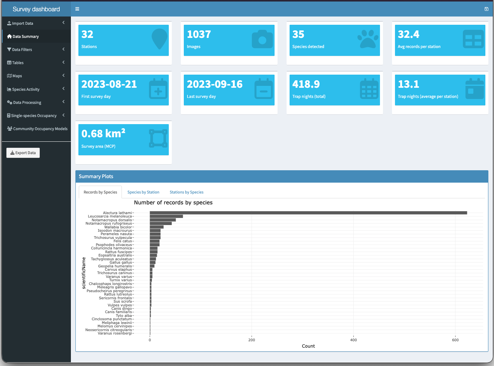

WildObs data follow the Camera Trap Data Package standard (Camtrap DP), so they work with the growing set of tools built for it. This vignette takes one WildObs project to three of them: the camtrapdp R package, a GBIF Darwin Core export, and the camtrapR package, including its interactive survey dashboard.
WildObs packages carry a few additions to the standard (see
Inside a WildObs data package). Most tools ignore what they do
not know, but some check the standard strictly.
as_camtrapdp() removes the additions, reports every change
it made, and checks the result, so the package is canonical Camtrap
DP.
# load the R library
library(WildObsR)
# your personal API key, read from .Renviron (see the Get started vignette)
api_key <- Sys.getenv("WILDOBSR_API_KEY")
# specify the project to access
id <- "QLD_Dwyers_Scrub_ANIM3018_2023_WildObsID_0005"
# download the data package, while including the media resource, and take the first value in the list
dp <- wildobs_dp_download(api_key = api_key, project_ids = id, media = TRUE)[[id]]Convert to canonical Camtrap DP
# remove the WildObs additions to become canonical Camtrap DP
out <- as_camtrapdp(dp, warn = "none")
# check the result to see what was changed: how many fields, values and tables, by the kind of change
as.data.frame(table(where = out$report$level, change = out$report$action), responseName = "n") |>
subset(n > 0)
#> where change n
#> 1 field dropped 10
#> 2 package dropped 7
#> 3 resource dropped 1
#> 8 value moved to vernacularNames$eng 1
#> 12 value recoded RAiD -> Handle 1
#> 14 package repointed 1
#> 19 resource schema repointed 3
# Check if the converted package passes the Camtrap DP profile and the camtrapdp package's checks
c(profile = out$validation$descriptor$valid, camtrapdp = out$validation$camtrapdp$valid)
#> profile camtrapdp
#> TRUE TRUEThe output of as_camtrapdp() is a list that stores not
only the reformatted data package, but also includes information
describing how the data was reformatted. out$report lists
every change, one row per field or value, with where it came from. The
covariates table is removed by default, because Camtrap DP
has no place for it. Instead, you can use
keep_covariates = TRUE to keep it as an extra table, which
the standard allows.
Use it with camtrapdp, and export to GBIF
out$camtrapdp is already a camtrapdp
object, so every camtrapdp function accepts it. For example, its
taxonomy, and a Darwin Core Archive ready to publish on GBIF:
# view the taxa, in camtrapdp's own format
head(camtrapdp::taxa(out$camtrapdp)[, c("scientificName", "taxonRank")])
#> # A tibble: 6 × 2
#> scientificName taxonRank
#> <chr> <chr>
#> 1 Alectura genus
#> 2 Alectura lathami species
#> 3 Animal phylum
#> 4 Antechinus genus
#> 5 Aves class
#> 6 Blank <NA>
# specify a temporary directory to save results
dwc_dir <- file.path(tempdir(), "dwc")
# and save the data package formatted in the Darwin Core Standard
suppressMessages(camtrapdp::write_dwc(out$camtrapdp, dwc_dir))
# view which files were saved
list.files(dwc_dir)
#> [1] "meta.xml" "multimedia.csv" "occurrence.csv"Use it with camtrapR
camtrapR is a
popular R package for camera trap data management. While this package
offers a number of useful tools, we focus on a few. camtrapR reads
Camtrap DP from disk. Therefore, we must first write the converted
package, then read it back with camtrapR::readcamtrapDP(),
which returns camtrapR’s camera table (one row per sampling location
locationID) and record table (one row per 5-min observation
observationID):
# specify a temporary folder to save the WildObs data package
pkg_dir <- file.path(tempdir(), "dwyers_scrub_camtrapdp")
# and use frictionless to write it to disk
frictionless::write_package(out$package, pkg_dir)
# read the recently written files using camtrapR functions
ct <- camtrapR::readcamtrapDP(
deployments_file = file.path(pkg_dir, "deployments.csv"),
media_file = file.path(pkg_dir, "media.csv"),
observations_file = file.path(pkg_dir, "observations.csv"),
datapackage_file = file.path(pkg_dir, "datapackage.json")
)
# view number of rows and columns in the stations table
dim(ct$CTtable)
#> [1] 32 27
# repeat for the record table
dim(ct$recordTable)
#> [1] 2885 31camtrapR joins every deployment at a sampling location
locationID into one row identified by the
Station field. Gaps between individual deployments at a
Station are recorded as Problem periods, so
the camera operation matrix generated by camtrapR counts only the days a
camera was running. A station with a single deployment has no gaps, so
camtrapR adds no Problem columns; tell it whether there are
any. From there, camtrapR builds detection histories with effort:
# were there stations with gaps between its deployments?
has_gaps <- any(grepl("^Problem", names(ct$CTtable)))
# create a matrix describing how many days each station was operating
camop <- camtrapR::cameraOperation(CTtable = ct$CTtable, stationCol = "Station",
setupCol = "Setup_date", retrievalCol = "Retrieval_date",
hasProblems = has_gaps, dateFormat = "ymd HMS",
writecsv = FALSE)
# gather animal detections that can be placed on a station
rec <- ct$recordTable[ct$recordTable$observationType == "animal" &
# making sure to remove obscured records to link to specific deployments
!grepl("^obscured_for_", ct$recordTable$deploymentID), ]
# and create a new column called station for a clean match to CT table
rec$Station <- rec$locationID
# Create a weekly detection history of Australian brush-turkeys, with the camera-days behind each cell
dh <- camtrapR::detectionHistory(recordTable = rec, camOp = camop, stationCol = "Station",
speciesCol = "scientificName",
recordDateTimeCol = "DateTimeOriginal",
recordDateTimeFormat = "ymd HMS", species = "Alectura lathami",
occasionLength = 7, day1 = "station", includeEffort = TRUE,
scaleEffort = FALSE, timeZone = "UTC")
# view the first five stations, every week
head(dh$detection_history, 5)
#> o1 o2 o3
#> T1_C1_SEVT_WildObsID_0005 1 1 0
#> T1_C1_Sclero_WildObsID_0005 1 1 0
#> T1_C2_SEVT_WildObsID_0005 1 1 0
#> T1_C2_Sclero_WildObsID_0005 1 1 0
#> T1_C3_SEVT_WildObsID_0005 1 1 1camtrapR reads the date-times as UTC, the time zone they are written
in. Pass the project’s own time zone (dp$temporal$timeZone)
where camtrapR asks for one if daily boundaries or activity times
matter.
Explore it in the camtrapR survey dashboard
A key function of the camtrapR package is
camtrapR::surveyDashboard(), which opens an interactive app
for exploring and analysing a survey. It provides summaries, maps,
activity patterns, species accumulation, and occupancy models. Pass it
the two tables read by camtrapR::readcamtrapDP() above:
# load the interactive dashboard
camtrapR::surveyDashboard(
# specify camera trap vs records table, filtered to species-level IDs
CTtable = ct$CTtable, recordTable = rec[rec$taxonRank %in% c("species"), ],
# specify which columns record sampling locations and start/end dates
stationCol = "Station", setupCol = "Setup_date", retrievalCol = "Retrieval_date",
# describe any sampling gaps and date-time formats
hasProblems = has_gaps, CTdateFormat = "ymd HMS",
# describe the spatial context
xcol = "longitude", ycol = "latitude", crs = "epsg:4326",
# specify columns for species and date-time of detections
speciesCol = "scientificName", recordDateTimeCol = "DateTimeOriginal",
# specify the date-time format of detections
recordDateTimeFormat = "ymd HMS", timeZone = "Australia/Brisbane"
)
Session information
sessionInfo()
#> R version 4.5.1 (2025-06-13)
#> Platform: aarch64-apple-darwin20
#> Running under: macOS Tahoe 26.5.1
#>
#> Matrix products: internal
#> BLAS: /Library/Frameworks/R.framework/Versions/4.5-arm64/Resources/lib/libRblas.0.dylib
#> LAPACK: /Library/Frameworks/R.framework/Versions/4.5-arm64/Resources/lib/libRlapack.dylib; LAPACK version 3.12.1
#>
#> locale:
#> [1] C.UTF-8/C.UTF-8/C.UTF-8/C/C.UTF-8/C.UTF-8
#>
#> time zone: Australia/Brisbane
#> tzcode source: internal
#>
#> attached base packages:
#> [1] stats graphics grDevices utils datasets methods base
#>
#> other attached packages:
#> [1] WildObsR_0.3.0.9000 here_1.0.1
#>
#> loaded via a namespace (and not attached):
#> [1] DBI_1.3.0 remotes_2.5.0 permute_0.9-10
#> [4] rlang_1.3.0 magrittr_2.0.5 shinydashboard_0.7.3
#> [7] camtrapR_3.0.5 otel_0.2.0 e1071_1.7-17
#> [10] compiler_4.5.1 mgcv_1.9-3 mongolite_4.1.0
#> [13] vctrs_0.7.3 reshape2_1.4.4 oz_1.0-22
#> [16] stringr_1.6.0 pkgconfig_2.0.3 crayon_1.5.3
#> [19] fastmap_1.2.0 ellipsis_0.3.2 geojsonsf_2.0.5
#> [22] utf8_1.2.6 promises_1.3.3 sessioninfo_1.2.3
#> [25] tzdb_0.5.0 purrr_1.2.2 bit_4.6.0
#> [28] xfun_0.61 cachem_1.1.0 jsonlite_2.0.0
#> [31] camtrapdp_0.6.0 later_1.4.2 terra_1.9-50
#> [34] parallel_4.5.1 cluster_2.1.8.1 R6_2.6.1
#> [37] stringi_1.8.9 RColorBrewer_1.1-3 pkgload_1.4.1
#> [40] lubridate_1.9.5 Rcpp_1.1.2 knitr_1.52
#> [43] usethis_3.2.1 readr_2.2.0 httpuv_1.6.16
#> [46] Matrix_1.7-3 splines_4.5.1 timechange_0.4.0
#> [49] tidyselect_1.2.1 abind_1.4-8 rstudioapi_0.17.1
#> [52] stringdist_0.9.17 vegan_2.7-6 codetools_0.2-20
#> [55] curl_8.0.0 pkgbuild_1.4.8 lattice_0.22-7
#> [58] tibble_3.3.1 plyr_1.8.9 shiny_1.10.0
#> [61] withr_3.0.3 S7_0.2.0 evaluate_1.0.5
#> [64] desc_1.4.3 sf_1.1-3 RcppParallel_5.1.11-1
#> [67] units_1.0-1 proxy_0.4-29 pillar_1.11.1
#> [70] frictionless_1.3.0 KernSmooth_2.23-26 DT_0.33
#> [73] generics_0.1.4 sp_2.2-0 vroom_1.7.1
#> [76] rprojroot_2.1.1 hms_1.1.4 ggplot2_4.0.3
#> [79] scales_1.4.0 xtable_1.8-4 chron_2.3-63
#> [82] class_7.3-23 glue_1.8.1 ozmaps_0.4.5
#> [85] tools_4.5.1 data.table_1.17.4 mvtnorm_1.3-3
#> [88] fs_1.6.6 grid_4.5.1 jsonvalidate_1.5.0
#> [91] tidyr_1.3.2 crosstalk_1.2.1 shinyBS_0.61.1
#> [94] devtools_2.4.6 nlme_3.1-168 raster_3.6-32
#> [97] secr_5.3.0 cli_3.6.6 dplyr_1.2.1
#> [100] V8_8.2.0 gtable_0.3.6 digest_0.6.37
#> [103] classInt_0.4-11 RcppNumerical_0.6-0 lutz_0.3.2
#> [106] htmlwidgets_1.6.4 farver_2.1.2 memoise_2.0.1
#> [109] htmltools_0.5.8.1 lifecycle_1.0.5 leaflet_2.2.2
#> [112] httr_1.4.9 mime_0.13 bit64_4.8.6
#> [115] MASS_7.3-65